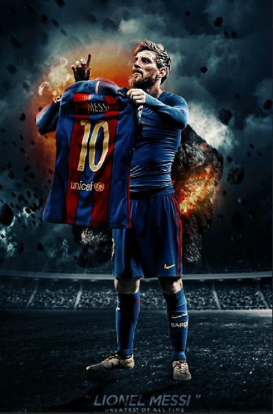

Lionel Messi
Lionel Andrés Messi Cuccittini (Rosário, 24 de junho de 1987) é um futebolista argentino que atua como atacante. Atualmente joga pelo Paris Saint-Germain e pela Seleção Argentina, onde, atuando como capitão, venceu a Copa do Mundo do Catar de 2022. Ele possui um recorde de sete premiações da Bolas de Ouro pela France Football, seis pela FIFA, um recorde de seis Chuteiras de Ouro e, em 2020, foi escalado no Dream Team da Bola de Ouro.
Messi é frequentemente considerado o melhor jogador do mundo e na opinião da grande maioria dos especialistas do esporte, sua qualidade técnica, jogadas, velocidade, habilidade na perna esquerda, trabalho de equipe e extraordinária vocação para o gol, o tornam um dos melhores futebolistas de todos os tempos, com alguns ainda o colocando como o melhor jogador de sempre.